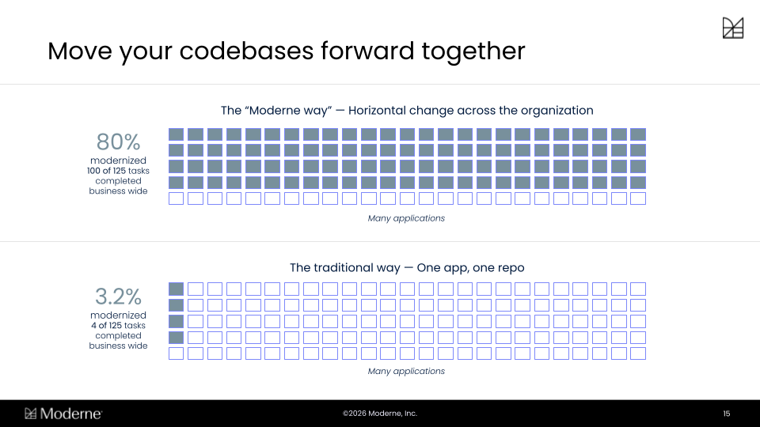
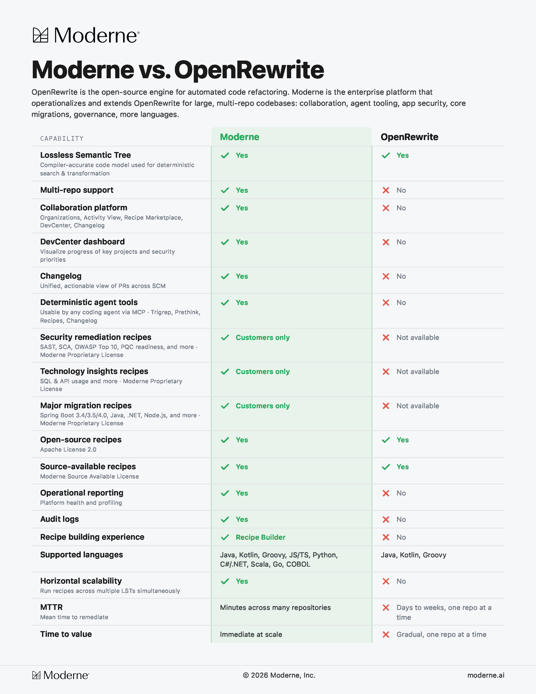
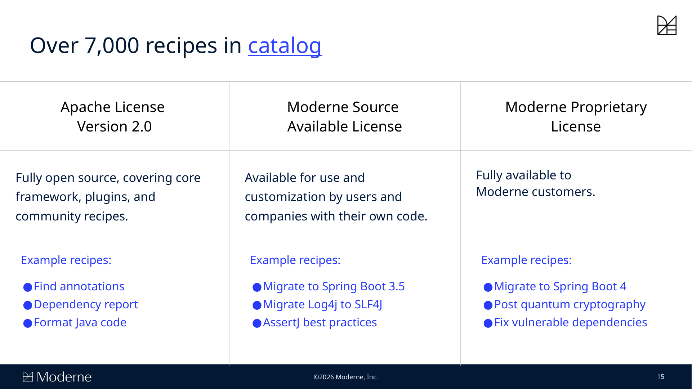
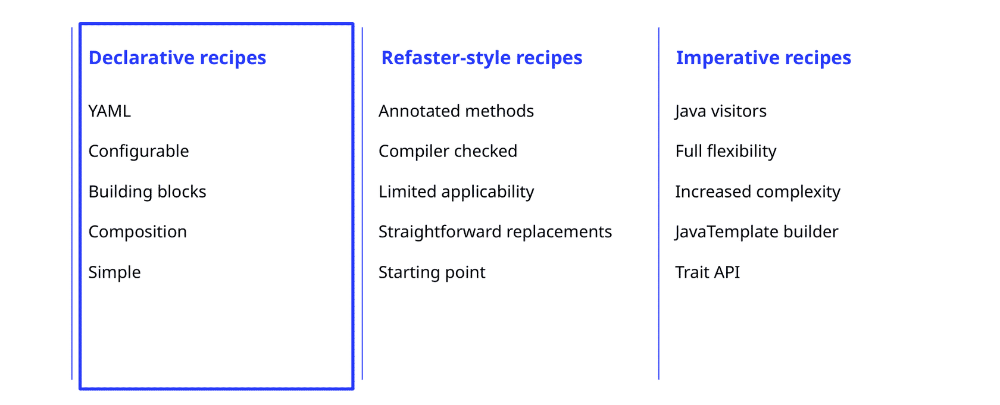

Introduction to OpenRewrite
Are you ready to make large-scale code changes safer, faster, and more reliable?
This course introduces you to OpenRewrite and Moderne, powerful tools that help enterprise software engineers automate code migrations, refactorings, and upgrades across multiple repositories.
OpenRewrite and Moderne are deterministic tooling, not AI products. Instead, they complement AI by giving agents compiler-accurate context and programs to execute so the AI you already use gets more reliable and more affordable as it scales.
Through hands-on guidance, you'll learn how to set up and run recipes, customize code transformations, analyze your codebase with data tables and visualizations, and track organizational progress.
No prior experience with automated refactoring is required—just bring your curiosity and a desire to streamline your team's development workflow.
Welcome to OpenRewrite
Getting Started with OpenRewrite and Moderne
Getting Started with OpenRewrite and Moderne
Welcome to your journey into automated code refactoring at scale! In this course, you'll discover how OpenRewrite and Moderne can help you make large-scale code changes safer, faster, and more reliable. Whether you're new to automated refactoring or looking to deepen your expertise, you're in the right place to learn how to streamline your team's development workflow and unlock the power of modern code transformation.
In this lesson, you'll get oriented to the course, meet your training team, and learn how to get the most out of your experience. Here are the key objectives we'll cover:
- 1
Understand the course structure and main topics.
- 2
Know where and how to get support during the course.
- 3
Set your own learning expectations for the workshop.
Support Channels: How to Get Help
Explore the different ways you can get support during this course. Expand each section to learn how to connect with the team and get your questions answered.
Slack: #training-intro-to-openrewrite
Join the OpenRewrite Slack channel #training-intro-to-openrewrite for ongoing support. You can post questions, share insights, and connect with other learners and instructors.
Slack is available both during and after the workshop for continued discussion.
Documentation Help
If you need step-by-step instructions or want to review concepts, refer to the lab guide and course documentation provided. These resources are designed to support your learning at your own pace.
You can find the documentation hub here: OpenRewrite docs | Moderne docs
This course is organized into several key modules to guide your learning journey. We'll start with an overview and CLI setup, move into composing and customizing recipes, then explore data tables and visualizations, and finally, learn how to track progress and manage changes with DevCenter.
Each module builds on the last, giving you a clear path from foundational concepts to advanced applications. By the end, you'll have a comprehensive understanding of how to leverage OpenRewrite and Moderne for your team's needs.
Workshop Goals and Outcomes
Expand each goal to see what you'll accomplish in this course and how it will help you in your day-to-day work.
Set up the Moderne CLI
You'll learn how to install and configure the Moderne CLI, enabling you to run recipes and automate code changes across repositories.
This foundational skill is essential for leveraging the full power of OpenRewrite and Moderne.
https://docs.moderne.io/hands-on-learning/introduction/module-1-running-recipes/
Learn, run, customize Declarative Recipes
Discover how to use the recipe builder to compose and tailor declarative YAML recipes for your specific codebase needs.
You'll gain hands-on experience in making code transformations repeatable and safe.
https://docs.moderne.io/hands-on-learning/introduction/module-2-recipe-builder/
Analyze code with Data Tables
Understand how to use search markers, data tables, and visualizations to extract insights and metadata from your code at scale.
This helps you identify patterns, track migrations, and make informed decisions.
https://docs.moderne.io/hands-on-learning/introduction/module-3-data-tables-visualizations/
Track progress with DevCenter
Learn how to use DevCenter to monitor migrations, upgrades, and organizational progress.
DevCenter provides visibility and accountability for your team's code transformation efforts.
https://docs.moderne.io/hands-on-learning/introduction/module-4-devcenter/
Automation at scale builds trust and accelerates your team's ability to deliver high-quality code changes—safely, quickly, and confidently.
OpenRewrite and Moderne: Origins & Concepts
The origins and impact of automated code refactoring
The origins and impact of automated code refactoring
Modern software development teams face the daunting challenge of keeping codebases up-to-date, secure, and consistent across thousands of files and repositories. Manual refactoring is not only time-consuming, but also risky and error-prone—especially at scale. OpenRewrite and Moderne were created to solve these challenges, enabling organizations to automate code changes safely, efficiently, and at unprecedented scale. In this lesson, you'll discover how these tools originated, the core concepts that power them, and why they are transforming the way teams approach code modernization.
The history and evolution of OpenRewrite and Moderne
Explore the major milestones that shaped OpenRewrite and Moderne. This timeline will help you understand how these tools evolved from a single-company solution to a powerful, industry-wide platform.
- Early Netflix Era
The Logging Migration Challenge
Netflix faces the challenge of migrating its internal logging framework to SLF4J across hundreds of services, highlighting the need for precise, automated code changes at scale.
- OpenRewrite Creation
OpenRewrite is Born
To address the migration challenge, Netflix engineer Jonathan Schneider (OpenRewrite creator & Moderne co-founder) developed OpenRewrite, a tool that parses Java code into a Lossless Semantic Tree (LST) for safe, automated refactoring.
- Community Expansion
OpenRewrite Goes Open Source
OpenRewrite becomes an open-source project, gaining adoption and contributions from the broader software engineering community.
- Moderne Launch
Moderne Platform Emerges
Moderne is founded to scale OpenRewrite’s capabilities, enabling multi-repository code transformations and integrating unique IP for serialization and horizontal search.
- Ecosystem Growth
Integration with Developer Tools
OpenRewrite has been integrated into popular developer tools like Gradle, Maven, IntelliJ IDEA, GitHub Copilot, and more; making automated refactoring accessible to a wide audience.
As you can see above, the original motivation for OpenRewrite was a massive migration project at Netflix; updating an internal logging framework to SLF4J. With logging code scattered across hundreds of services, manual updates were simply not feasible.
The risk of missing edge cases or introducing errors was too high, and the scale of the task demanded a new approach.
OpenRewrite was designed to automate these changes with accuracy, ensuring that every instance was updated while preserving the original style and intent of the code. This approach made it possible to tackle migrations that would otherwise be impossible or prohibitively expensive for large organizations.
What sets Moderne apart from OpenRewrite?
What sets Moderne apart from OpenRewrite?
Most modernization efforts go one repository at a time. While a handful of repos may be successfully migrated, the rest of the organization is still stuck on the old stack and continuing to accumulate technical debt, so they're stuck supporting multiple versions in the meantime.
Moderne's approach runs horizontally instead. The same recipe runs across every repo at once, which is how organizations get 80% of the way there across their whole codebase instead of stalling at only a few apps.

Part 1: OpenRewrite Overview and setting up the CLI
An Overview of OpenRewrite
Let's get started!
Comparing code representation methods for automated refactoring
Comparing code representation methods for automated refactoring
Understanding how code can be represented is crucial for effective automated refactoring. Below, we compare three approaches, text-based search, Abstract Syntax Trees (ASTs), and Lossless Semantic Trees (LSTs); highlighting their strengths and limitations.
Text-based search and replace
Text-based search scans code for specific strings or patterns. While simple, it cannot distinguish between code and comments, or understand context. This often leads to missed cases or unintended changes.
Because it lacks awareness of code structure, text-based search is risky for large-scale transformations and can easily break code if used for refactoring.
Abstract Syntax Tree (AST)
An AST represents the syntactic structure of code as a tree, capturing elements like statements and expressions. It is more sophisticated than text search, allowing for some structural analysis.
However, ASTs typically do not preserve formatting, comments, or all metadata, which can result in code changes that disrupt style or lose important context.
Lossless Semantic Tree (LST)
The LST preserves not only the structure and types of code, but also formatting, comments, and other metadata. This enables highly accurate, style-preserving transformations.
LSTs are essential for safe, automated refactoring at scale, ensuring that changes look like they were made by a team member and minimizing disruption to the codebase.
LSTs also cover more than your application code.
Build files, configuration, and other non-code files get parsed too, so a single effort can span dependencies, build plugins, CI configuration, and code in one pass; and because an LST is a rich, queryable model of your codebase, it is as useful for analyzing what you have as it is for changing it.
Recipes are at the heart of OpenRewrite's automation capabilities. A recipe is a deterministic program that defines what to find in your code and how to change it.
Recipes leverage the LST to make targeted, context-aware modifications, ensuring that changes are both accurate and stylistically consistent.
For example, a recipe can automatically update test annotations and restructure code to use new APIs, all while preserving the original formatting and intent.
This approach enables organizations to perform complex migrations and upgrades with confidence and minimal manual effort.
Understanding the workflow
In this widget we will take a look at how we proceed through an OpernRewrite workflow.
Automated code transformation begins by preparing your codebase for analysis and change. This ensures that every step is accurate and repeatable.
- 1
Parse code into LST
Your source code is parsed into a Lossless Semantic Tree (LST), capturing all structure, formatting, comments, and type information. This forms the foundation for precise analysis and transformation.
- 2
Apply recipes for transformation
Recipes are executed on the LST, identifying code patterns and making targeted changes. Each recipe is deterministic, ensuring consistent results across the codebase.
- 3
Serialize changes back to source
The modified LST is written back to source code, preserving the original style and minimizing disruption. The result is a diff that looks like it was crafted by a team member.
- 4
Review, commit, or customize
After transformation, changes can be reviewed, committed, or further customized as needed. This step ensures that teams maintain control and confidence in the automated process.
Summary of the workflow
This workflow enables safe, scalable, and efficient code modernization, reducing manual effort and risk while maintaining code quality and consistency.
Scaling and integrating OpenRewrite and Moderne
Scaling and integrating OpenRewrite and Moderne
Explore how OpenRewrite and Moderne scale and integrate with the broader development ecosystem. Click each tab to learn more about their unique capabilities and integrations.
OpenRewrite is available as an open-source project, with plugins for popular build tools like Gradle and Maven. These plugins allow developers to run recipes against a single repository, making it easy to automate code changes within individual projects.
The open-source ecosystem encourages community contributions and customization, enabling organizations to tailor recipes to their specific needs while benefiting from shared knowledge and improvements.
OpenRewrite is integrated with a number leading developer tools, including JetBrains IntelliJ IDEA, GitHub Copilot upgrade assistant, and Broadcom App Advisor. These integrations bring automated refactoring directly into developers' daily workflows.
By embedding automation into familiar environments, these tools lower the barrier to adoption and make it easier for teams to keep their codebases modern and secure.
The Moderne platform extends OpenRewrite by enabling code transformations across multiple repositories at once. It leverages proprietary technology to serialize LSTs to disk, allowing for horizontal search and modification at scale.
This unique capability sets Moderne apart, making it possible to coordinate large-scale migrations and upgrades across an entire organization with unprecedented efficiency.
With multi-repository mode, Moderne can apply recipes to many codebases simultaneously. This is essential for organizations managing hundreds or thousands of repositories, ensuring consistency and reducing manual overhead.
Multi-repository support is especially valuable for centrally-led migrations, such as security upgrades or framework transitions, where uniformity and speed are critical.


Types of recipe licenses in the OpenRewrite and Moderne ecosystems
Types of recipe licenses in the OpenRewrite and Moderne ecosystems
Explore the various types of recipes available within the OpenRewrite and Moderne ecosystem. Each type serves different needs and audiences, from open-source users to enterprise customers. Expand each section below to learn more about what is covered and who can use each type of recipe.
Apache 2.0 core recipes
These recipes are fully open source and cover the core framework, plugins, and community-contributed transformations. They are available for anyone to use and customize, making them ideal for organizations with unique requirements.
Examples include general-purpose refactorings and upgrades that benefit the wider community.
Moderne source available recipes
Moderne Source Available recipes are developed by Moderne and are available for use and customization by customers and partners.
These recipes often address more specialized or advanced migration needs.
Access to these recipes may be limited by licensing, but they provide significant value for organizations with complex codebases.
Moderne proprietary recipes
These recipes are exclusive to Moderne customers and partners.
They cover major migrations, security upgrades, and other high-impact transformations that require deep expertise and proprietary knowledge.
Proprietary recipes are a key differentiator for Moderne, enabling organizations to tackle challenges that are not addressed by open-source solutions.
Key terms flashcards
Key terms flashcards
Test your understanding of the key terms from this lesson. Flip each card to review the definitions.
What is the main advantage of the Lossless Semantic Tree (LST) in OpenRewrite?
Setting Up and Running Recipes with Moderne CLI
Getting started with the Moderne CLI
Getting started with the Moderne CLI
Automating code changes across multiple repositories can be a daunting, time-consuming task when done manually. The Moderne CLI empowers you to perform safe, repeatable, and large-scale code transformations efficiently, reducing risk and freeing up valuable developer time. In this lesson, you'll learn how to set up and use the Moderne CLI to streamline your code refactoring workflows and unlock the full potential of automation in your organization.
In this lesson, you'll gain hands-on experience with the Moderne CLI and learn how to automate code changes at scale. By the end, you’ll be able to confidently set up the CLI, connect it to the Moderne Platform, and run recipes across your codebase.
- 1
Install and configure the Moderne CLI
- 2
Connect CLI to the Moderne Platform
- 3
Run recipes across repositories
- 4
Review and apply code changes
Key terms for Moderne CLI workflows
Key terms for Moderne CLI workflows
Review each flashcard to reinforce your understanding of the essential terms and concepts introduced in this lesson. These definitions will help you navigate the CLI and its features with confidence.
Moderne CLI setup: prerequisites and first steps
Moderne CLI setup: prerequisites and first steps
Before you can start running recipes, it’s important to ensure your environment is ready and you have everything you need. Expand each section below to review the requirements and initial setup steps for the Moderne CLI.
Required tools and environment
To use the Moderne CLI effectively, you'll need to ensure that your repositories can build and run on your local machine.
It is also important to have all the tools installed on your system to build your code repositories.
Having the right environment and version ensures a smooth installation and operation of the CLI.
Accessing the Moderne CLI
You can access the Moderne CLI directly from the Moderne Platform (http://app.moderne.io/).
Follow the instructions here to get started.
If you are already a Moderne customer, you should use your own tenant.
Connecting to the Moderne Platform and syncing organizations
After installing the CLI, you’ll need to connect it to the Moderne Platform at https://app.moderne.io This step authenticates your CLI and allows it to sync with your default organization.
If you are already a Moderne customer, you should use your tenant instead.
Lab 1.1 - Setting up the Moderne CLI
Lab 1.1 - Setting up the Moderne CLI
Introduction to setting up Moderne CLI
Setting up the Moderne CLI involves a series of straightforward steps that prepare you to automate code changes across your repositories.
Click the link above to launch the Lab, and follow each step carefully to ensure a successful setup and execution.
- 1
Install the Moderne CLI
Download the Moderne CLI from the official Moderne platform website. Extract or install the CLI as appropriate for your operating system. Make sure the CLI executable is accessible from your command line interface.
- 2
Connect to the Moderne Platform
Launch the CLI and connect it to the Moderne platform by following the authentication prompts. You’ll typically be asked to log in using your Moderne account credentials and authorize the CLI to access your organization.
- 3
Authenticate and log-in
Once connected, authenticate your session to ensure the CLI has the necessary permissions. This may involve entering a token or confirming your identity through the Moderne platform’s web interface.
- 4
Install required recipes
With authentication complete, you can install the recipes you plan to use. The CLI lets you sync the full recipe catalog from your Moderne tenant or install individual recipes by name and version, so you're running exactly the recipes you intend to use.
- 5
Download and build LSTs for repositories
Before running recipes, the CLI will parse your codebase and build Lossless Before running recipes, the CLI needs Lossless Semantic Trees (LSTs) for each repository you're working with. You'll choose which repositories to use, then use the CLI to either download pre-built LSTs from your Moderne tenant, or build them locally.
The LST preserves your code's structure and style, which is what makes precise and safe transformations possible.
Summary: the Moderne CLI is ready for use
After completing these steps, your CLI is ready to run recipes across your repositories. You can now automate code changes, review diffs, and apply updates with confidence.
When you run a recipe using the Moderne CLI, the tool analyzes your codebase and applies the specified transformations according to the recipe’s logic. The CLI generates a diff for each change, allowing you to review exactly what will be modified before committing.
This approach ensures that all changes are safe, consistent, and match your existing code style. You can choose to apply the changes directly, review them in detail, or roll them back if needed, giving you full control over the transformation process.
Lab 1.2 - Running Recipes
Lab 1.2 - Running Recipes
Running recipes: scenarios and workflows
Running recipes: scenarios and workflows
Explore each tab to learn about different ways to run recipes with the Moderne CLI and Platform. Each scenario highlights a unique workflow, its benefits, and practical tips for success.
Running recipes across 11 repositories can save over 150 hours of manual work; automation at this scale transforms how teams manage code changes.
Running a recipe on a single repository is ideal for targeted changes or testing new recipes. With the CLI, you specify the repository and the recipe you want to apply, and the tool processes only that codebase.
This approach allows you to validate the recipe’s effects before scaling up to multiple repositories. It’s also useful for smaller teams or projects with isolated codebases.
The Moderne CLI excels at running recipes across many repositories simultaneously. You can select multiple public or private repositories within your organization and apply the same recipe in one operation.
This workflow is especially valuable for large-scale migrations or upgrades, saving significant time and ensuring consistency across your codebase.
After running a recipe, the CLI generates diffs for each repository, showing exactly what will change. You can review these diffs in detail, approve or reject changes, and commit updates as needed.
This review process helps maintain code quality and allows you to catch any unintended modifications before they are merged.
While the CLI offers powerful automation and scripting capabilities, the Moderne platform UI provides a visual interface for browsing recipes, tracking progress, and managing migrations.
Additonally, it's important to note that the Moderne Platform is far better at running recipes as scale than trying to run them locally.
Locally, you are limited by the processing power and storage space of your local system; whereas the Moderne Platform can scale up and handle many more repos and recipe runs.
Choosing between the CLI and UI depends on your workflow preferences and the scale of your code changes. Many teams use both for maximum flexibility and control.
Part II: Building Reciepes
Composing and Customizing Declarative Recipes
Customizing code transformations with declarative recipes
Customizing code transformations with declarative recipes
Modern codebases are constantly evolving, and organizations often need to migrate frameworks, update APIs, or enforce new coding standards across many projects. Being able to compose and customize code transformations is essential for meeting these real-world needs.
In this lesson, you'll learn how to use the Moderne recipe builder to create and tailor declarative recipes, giving your team the power and flexibility to automate migrations and refactorings at scale.
Three types of recipes
Three types of recipes

There are three types of recipes, but for the purposes of this course, we will focus on Declarative recipes
To get the most out of this lesson, review the objectives below. These will guide your learning and help you focus on the key skills and concepts you'll develop as you work with declarative recipes.
- 1
Understand YAML recipe structure
- 2
Compose and edit with recipe builder
- 3
Customize recipes for migrations
- 4
Recognize declarative approach limits
Declarative recipes aggregate and configure other existing recipes, allowing you to fill in parameters and snap them together like building blocks. Their primary limitation is that they cannot describe anything new or novel. So, whenever you need to do something the existing recipe catalogue does not account for; they hit a wall.
Key terms and concepts: declarative recipes
Key terms and concepts: declarative recipes
Review each flashcard to get familiar with the key terms and concepts you'll encounter as you compose and customize declarative recipes.
Anatomy of a declarative recipe
Anatomy of a declarative recipe
Understanding the structure of a declarative recipe is key to effective customization. Each part plays a specific role in defining, composing, and controlling your code transformations.
Header and Naming Conventions
Recipe names follow the conventions of the ecosystem they are authored in.
Java recipes follow the conventions of a fully qualified class name. Go and Python and Javascript recipes follow the naming conventions of those ecosystems.
Regardless of ecosystem the most important thing about the recipe name is that it is unique.
In addition to simple naming, it is also important to have a useful, human-readable description field. This field will be used as a description of why the changes were made for anyone who runs the recipe, and is what coding agents running recipes will look at to determine their relevance.
Recipe List and Composition
The core of a declarative recipe is the recipeList. This is an ordered list of tasks or transformations, such as changing type names, updating annotations, or modifying imports. Each entry in the list represents a specific action to be performed on your codebase.
By composing multiple tasks in the recipeList, you can automate complex migrations or refactorings in a single, repeatable workflow.
Adding, Removing, and Editing Segments
The recipe builder allows you to add, delete, or modify entire segments of a recipe. Segments correspond to individual tasks or groups of tasks within the recipeList.
You can tailor the recipe to your needs by including only the relevant transformations for your migration scenario.
This flexibility makes it easy to adapt existing recipes or create new ones that match your organization's requirements.
Editing Preconditions
Preconditions are optional checks that determine whether a recipe or its steps should run. You can edit preconditions in the recipe builder to ensure that transformations are only applied when certain criteria are met, such as the presence of specific dependencies or code patterns.
Careful use of preconditions helps prevent unintended changes and increases the safety of automated migrations.
Lab 2.1 - Compose YAML recipe with the SaaS recipe builder
Lab 2.1 - Compose YAML recipe with the SaaS recipe builder
Customization scenarios and use cases
Customization scenarios and use cases
Each scenario highlights a different way to leverage declarative recipes for code modernization. Explore the tabs to see how you can adapt recipes for your organization's needs.
When your organization needs to migrate from one library or framework to another, declarative recipes can automate the process.
For example, migrating from JUnit 4 to JUnit 5 involves updating annotations, imports, and test structures. By composing a recipe with the necessary tasks, you can ensure consistent, repeatable changes across all affected projects.
This approach reduces manual effort and minimizes the risk of missing important updates, especially in large codebases.
Sometimes, a single migration requires several related changes. The recipe builder allows you to combine multiple recipes into a composite, orchestrating a sequence of transformations in one workflow. For instance, you might combine type changes, annotation updates, and static import adjustments into a single composite recipe.
This makes it easier to manage complex migrations and ensures that all necessary steps are performed together, improving reliability and efficiency.
Every organization has unique coding standards and migration requirements. With the recipe builder, you can edit existing recipes or create new ones tailored to your specific needs. This might involve adding custom preconditions, removing irrelevant steps, or adjusting transformations to match your internal guidelines.
Customizing recipes in this way helps enforce consistency and supports your team's development practices across all projects.
Declarative recipes are ideal for straightforward, compiler-checked transformations, but they have limitations. They may not handle highly complex or context-dependent changes that require imperative logic or advanced pattern matching.
For more advanced scenarios, consider exploring imperative or Refaster-style recipes, which offer greater flexibility at the cost of increased complexity. These topics are covered in advanced recipe authoring courses.
Part III: Search, Datatables, and Visualizations
Analyzing Code with Search Markers, Data Tables, and Visualizations
Analyzing code at scale: search markers, data tables, and visualizations
Analyzing code at scale: search markers, data tables, and visualizations
Understanding your codebase at scale is essential for making safe, informed decisions about migrations, upgrades, and modernization.
OpenRewrite and Moderne provide powerful analytical tools (search markers, data tables, and visualizations), that help teams not only find and annotate code patterns, but also extract structured insights and communicate findings effectively across the organization. In this lesson, you'll discover how these features work together to turn raw code into actionable intelligence.
In this lesson, you'll gain hands-on experience with the analytical features of OpenRewrite and Moderne. By the end, you'll be able to use these tools to extract, interpret, and communicate valuable insights from your codebase.
- 1
Use search markers
- 2
Generate and interpret data tables
- 3
Create and analyze visualizations
- 4
Apply tools to real-world scenarios
OpenRewrite and Moderne provide a comprehensive set of analytical tools designed to help you understand your codebase at scale. Search markers let you annotate code with structured, semantic information during recipe execution, all without changing the original source code.
Data tables then collect and organize these annotations and other metadata into structured, tabular formats, making it simple to analyze patterns, track metrics, and generate reports.
Visualizations convert this structured data into interactive charts and graphs, allowing you to clearly communicate findings and monitor progress over time.
By combining these tools, teams can move beyond manual code review and basic text search, enabling data-driven decision-making for migrations, upgrades, and modernization projects.
Key terms for code analysis
Key terms for code analysis
Review each flashcard to get familiar with the essential vocabulary for analyzing code with OpenRewrite and Moderne.
Deep dive: analytical tools in Moderne
Deep dive: analytical tools in Moderne
Expand each section to explore how search markers, data tables, and visualizations work and why they matter.
What is a search marker?
Search markers are annotations inserted into your codebase during recipe execution, typically as language-specific comments. They flag specific code locations with structured, semantic metadata—without modifying the actual code logic. This allows you to visually highlight matches in code diffs, provide context for why something was marked, and enable other recipes to act on these marked elements.
Search markers are especially useful for identifying patterns, tracking changes, and supporting further automated actions. They also generate a data table of all search results, making it easy to review and analyze findings at scale.
How do data tables work?
Data tables are automatically generated when recipes run, capturing core metadata such as source paths, project information, and any custom columns you define. These tables organize extracted attributes and inferences into a structured, tabular format, which is ideal for reporting, analytics, and understanding code patterns.
With data tables, you can generate reports on the current state of your codebase, track metrics for planning, and extract insights that inform modernization efforts. They are especially powerful when working across multiple repositories.
What do visualizations provide?
Visualizations transform raw data from data tables into interactive, easy-to-understand charts and graphs. In Moderne, these are often presented as Jupyter Notebooks that aggregate and display data in a uniform way across recipe runs.
Visualizations help you communicate findings to stakeholders, track progress visually, and make a compelling case for modernization initiatives. They turn complex data into actionable insights that are accessible to both technical and non-technical audiences.
Lab 3.1 - Using search recipes and data tables with the Moderne CLI
Lab 3.1 - Using search recipes and data tables with the Moderne CLI
Step-by-step: analyzing code with Moderne
Follow these steps to leverage search markers, data tables, and visualizations for effective code analysis and reporting.
- 1
Start with a search recipe
Begin by running a search recipe using the Moderne CLI or platform. This recipe will scan your codebase for specific patterns or usages, annotating matches with search markers. These markers provide semantic context and flag important locations for further analysis.
- 2
Export or view data tables
After the recipe runs, review the automatically generated data table. This table captures all search results and relevant metadata in a structured format, making it easy to analyze patterns, extract insights, and generate reports.
- 3
Generate visualizations
Use the data table to create visualizations—such as charts or graphs—that aggregate and display your findings. In Moderne, visualizations are often provided as ready-to-use Jupyter Notebooks, helping you communicate results clearly and track progress over time.
- 4
Inform migration and modernization
Leverage the insights from your search markers, data tables, and visualizations to guide migration or modernization efforts. These outputs help you understand the current state, prioritize actions, and communicate effectively with stakeholders.
Summary: from data to decisions
By combining search markers, data tables, and visualizations, you can move from raw code to actionable intelligence. This workflow supports safe, data-driven decisions and enables efficient, large-scale code transformations.
Lab 3.2 - Using data tables and visualizations
in the Moderne Platform
Lab 3.2 - Using data tables and visualizations in the Moderne Platform
Real-world scenarios: analytical tools in action
Real-world scenarios: analytical tools in action
Explore each tab to see how search markers, data tables, and visualizations are used in practical situations.
Suppose you need to identify all usages of a vulnerable dependency across your codebase. By running a search recipe, you can annotate every instance with search markers, creating a comprehensive map of where the dependency is used.
The resulting data table lists all occurrences, which can then be visualized to show the scope of the issue. This enables you to prioritize remediation and report progress to your team or leadership.
When rolling out a new API, it's important to track how widely it has been adopted. Search markers can flag every usage of the new API, and data tables aggregate this information across multiple repositories.
Visualizations then display adoption trends over time, helping you measure success and identify areas where further migration is needed.
For executive reporting, visualizations are invaluable. After running recipes and collecting data tables, you can generate charts that show migration progress, such as the percentage of code updated or remaining work.
These visual summaries make it easy to communicate complex technical progress to non-technical stakeholders, supporting buy-in and resource planning.
Type-safe search leverages the structure and semantics of your code, ensuring accurate results even when class or method names are similar.
In contrast, text search may miss or misidentify patterns, especially in large or complex codebases.
Using search markers and data tables with type-safe search provides confidence that all relevant instances are found, reducing risk and manual effort compared to traditional text or AI-based searches.
What is the main purpose of a search marker in OpenRewrite?
Part IV: DevCenter
Tracking Progress and Managing Change with DevCenter
Visibility and tracking: enter DevCenter
Visibility and tracking: enter DevCenter
DevCenter is the mission-control dashboard of the Moderne Platform, designed to give organizations a unified, high-level view of their code migration and upgrade progress. It brings together key metrics from across all repositories, making it easy to see where you stand, what’s left to do, and where attention is needed.
With DevCenter, teams can quickly surface actionable insights, communicate status to any audience, and make informed decisions about next steps.
Our most successful customers treat each of these pieces as one continuous loop rather than separate tools. They customize an off the shelf recipe for their organization, connect it to DevCenter so the dashboard reflects that customized recipe, and watch progress unfold over time as teams move through the migration. Then, as those teams work through it, they feed what they learn back into the recipe, so the next team hits fewer surprises than the last.
This is the horizontal approach playing out in practice because the same recipe runs across every repo, each team's fixes improve it for the team behind them, and the migration builds momentum as it goes.
Manual migrations tend to do the opposite, slowing down over time because every team starts from scratch.
In this lesson, you'll walk through DevCenter and learn how to read the dashboard, customize it for what your organization cares about, and connect it to recipes and migrations. Here is a look at the learning objectives for this section:
- 1
Understand DevCenter’s role
- 2
Explore dashboard components
- 3
Generate and interpret dashboards
- 4
Apply insights for planning
DevCenter key terms flashcards
DevCenter key terms flashcards
Review each flashcard to get familiar with the essential terms you'll encounter in this lesson. Understanding these will help you navigate DevCenter and its dashboards with confidence.
Main components of DevCenter dashboards
Main components of DevCenter dashboards
Explore the primary panels of DevCenter dashboards to understand how each one contributes to tracking progress, coordinating teams, and maintaining security throughout your organization’s development lifecycle.
Ownership: team and repo impact
The Ownership dashboard provides a snapshot of your organization’s repositories, showing the total repo count, number of committers, and lines of code. This helps you understand the scale of your initiatives and the teams involved, making it easier to assess impact and coordinate efforts.
By surfacing these metrics, Ownership gives leaders and engineers a clear sense of who is affected by migrations or upgrades and where resources may be needed most.
Change campaigns: migration progress
The Change Campaigns panel visualizes the progress of migrations and upgrades across all repositories. Using a parliament-style view, each dot represents a repository, and color-coding indicates its current status—such as major, minor, or patch level away from the goal.
This visual approach makes it easy to spot bottlenecks, track completion rates, and communicate progress to stakeholders at a glance.
Security: vulnerability tracking
The Security panel uses a radar-style visualization to highlight vulnerabilities across your organization. It allows you to run security recipes, track remediation, and monitor newly introduced issues in real time.
This component ensures that security remains a visible and actionable part of your migration and upgrade strategy.
It’s crucial to know where you are and be able to quickly communicate your progress—at any time, to anyone.
Lab 4.1 - Exploring DevCenter dashboards
in the Moderne Platform
Lab 4.1 - Exploring DevCenter dashboards in the Moderne Platform
DevCenter in real-world scenarios
DevCenter in real-world scenarios
Explore each tab to see how DevCenter supports real-world scenarios and organizational goals.
DevCenter enables teams to monitor the adoption of Java or Spring Boot versions across multiple repositories. By visualizing which projects are up-to-date and which lag behind, teams can prioritize upgrades and allocate resources where they’re needed most.
This visibility helps organizations standardize on supported versions, reduce technical debt, and ensure compatibility across their codebase.
The Security panel in DevCenter provides a radar view of vulnerabilities across all repositories. Teams can quickly identify which projects are exposed and track the impact of security recipes as issues are remediated.
With this information, security teams can focus their efforts, demonstrate progress to leadership, and respond rapidly to new threats.
DevCenter dashboards make it easy to communicate migration and upgrade progress to executives or other stakeholders. The clear, visual summaries help non-technical audiences grasp the current state and understand the value of ongoing initiatives.
This transparency builds trust and supports informed decision-making at every level of the organization.
Organizations can use DevCenter to set clear upgrade or migration goals and track progress over time. By defining targets and monitoring completion rates, teams stay motivated and accountable.
DevCenter’s dashboards provide the feedback loop needed to celebrate wins, identify obstacles, and keep initiatives on track.
Lab 4.2 - Generating DevCenter dashboards
with the Moderne CLI
Lab 4.2 - Generating DevCenter dashboards with the Moderne CLI
What is the primary purpose of DevCenter in the Moderne Platform?
Test Your Knowledge
Quiz
Which statement best describes the Lossless Semantic Tree (LST)?
Running the same recipe on the same codebase always produces the same result. What one word describes this property of OpenRewrite code changes?
You need to run a recipe across many repositories locally without modifying each repository to add a build plugin first. Which tool is the best fit?
After a recipe run completes, the CLI has not yet modified any source files. What has it produced for each repository that you must then apply to change the code?
What is a declarative recipe?
Recipes in a recipeList are executed in what order:
What makes OpenRewrite searches "semantic" rather than simple text or regex matching?
Which two-word CLI command exports a recipe's data table (for example MethodCalls or SearchResults) after a recipe run?
Which of the following is part of the organizational ownership section of a DevCenter dashboard?
On a DevCenter dashboard, what generates the cards (upgrades, security fixes, and similar) and their underlying data tables?
Next Steps
Summary & Next Steps: Growing with OpenRewrite and Moderne
Celebrating your progress and looking ahead
Celebrating your progress and looking ahead
Congratulations on completing your journey through OpenRewrite and Moderne!
You've taken important steps toward mastering automated code refactoring at scale. As you wrap up this course, remember that your new skills are just the beginning; there are countless opportunities to apply what you've learned, drive change in your organization, and continue growing as a developer and team member.
As you reflect on your learning, consider these key achievements from the course. Each represents a core skill or concept that will empower you to automate, analyze, and manage code changes more effectively.
- 1
Running and managing recipes
- 2
Composing declarative YAML recipes
- 3
Analyzing code with data tables
- 4
Tracking progress with DevCenter
Throughout this course, you’ve built a strong foundation in automated code transformation. You started by understanding the origins and value of OpenRewrite and Moderne, then learned how to set up and run recipes using the Moderne CLI. Next, you explored how to compose and customize declarative recipes for your unique needs. You gained hands-on experience analyzing codebases with search markers, data tables, and visualizations, and finally, you discovered how to track and communicate migration progress using DevCenter.
Each module built upon the last, equipping you with a holistic toolkit for safe, scalable, and insightful code modernization. These skills work together to help you and your team achieve more with less manual effort, while maintaining confidence and control over your codebase.
Key takeaways: OpenRewrite & Moderne
Key takeaways: OpenRewrite & Moderne
Review each flashcard to reinforce the most important ideas and skills you’ve gained. These big takeaways will help guide your next steps as you apply OpenRewrite and Moderne in your work.
Putting your knowledge into action
Here’s a practical roadmap to help you put your new knowledge into action. Follow these steps to keep learning and growing with OpenRewrite and Moderne.
- 1
Review course materials
Look back over your notes and course resources to reinforce key concepts and workflows. Revisit any modules where you want more practice.
- 2
Share and connect
Join the Slack community or other forums to share your experiences, ask questions, and learn from others who are also using OpenRewrite and Moderne.
- 3
Explore more features
Experiment with additional recipes, data tables, and visualizations. Challenge yourself to analyze new migration scenarios or reporting needs.
- 4
Track your progress
Use DevCenter to monitor your own migration or upgrade journey. Set goals, review dashboards, and celebrate your milestones along the way.
Keep growing and sharing
Continuous learning and collaboration are key. Stay curious, keep experimenting, and share your successes with your team and the broader community.
Explore further: resources and communities
Explore further: resources and communities
Explore these resources and communities to deepen your expertise and get support as you continue your journey.
Documentation and guides
Access the official OpenRewrite and Moderne documentation for detailed guides, FAQs, and best practices. These are your go-to references for technical questions and advanced usage.
Find them at the OpenRewrite docs and Moderne docs websites.
GitHub repositories
Browse the OpenRewrite and Moderne GitHub repositories to explore source code, contribute, or follow updates. These repos are great for staying current and engaging with the developer community.
Visit the OpenRewrite and Moderne GitHub pages for more.
Blog, Livestream, and YouTube
Stay up to date with the latest features, case studies, and tutorials through the Moderne blog, Code Remix Weekly livestream, and the Moderne & OpenRewrite YouTube channel.
These channels offer insights, demos, and community stories to inspire your next project.
O’Reilly eBook
Deepen your understanding with the "Automated Code Remediation at Scale" eBook, available from O’Reilly. This resource covers advanced strategies and real-world examples.
Check the Moderne resources page for access details.
Slack community and support
Join the OpenRewrite and Moderne Slack channels to connect with peers, ask questions, and get help from experts. The #training-intro-to-openrewrite channel is a great place to start.
Webinars and Live Training
Sign up for Webinars to continue building your skills. These opportunities help you stay ahead and deepen your expertise.
Watch for announcements on the Moderne website or in the Slack community.
Author your own recipes
Concepts, guides, and references for writing your own OpenRewrite recipes can be found here:
https://docs.moderne.io/user-documentation/recipes/authoring-recipes/
Next steps and engagement opportunities
Next steps and engagement opportunities
Explore these next steps and engagement opportunities to keep your momentum going. Each tab offers a different way to stay connected and grow.
If your team or organization wants to see Moderne in action or discuss enterprise adoption, request a demo or connect with the sales team.
Find contact information and request forms on the Moderne website.
Help improve the course and inspire others by sharing your feedback or success stories. Your experiences can help shape future learning and community support.
Reach out via Slack, course surveys, or the Moderne blog to contribute your story.